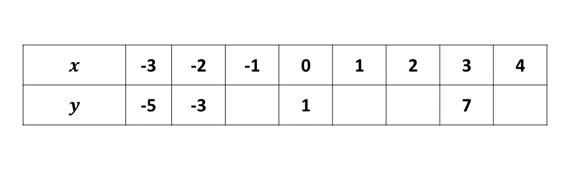
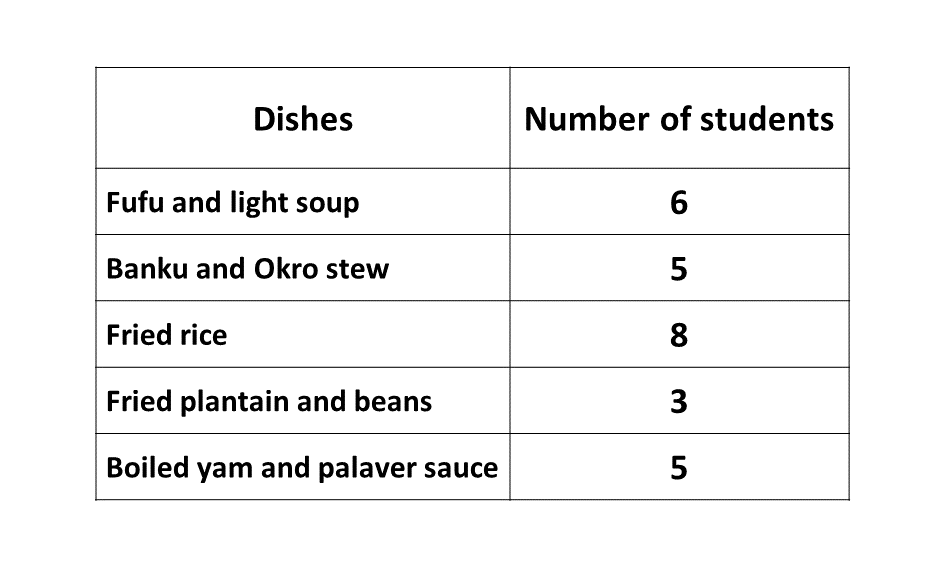

GUIDE (BECE - 2002b)
You have 60 minutes for each section. Try to work on your speed as you prepare towards the final exam.
Good luck and remember to check your answers with the solutions provided. If you have any questions, feel free to ask your teacher or refer to the video lessons for more help.
Section A - Multiple Choice Questions
This section contains 40 multiple choice questions. You have 60 minutes to complete it.
Each question has four options labeled A to D. Select the correct answer for each question.
Section B
Question 1
-
Simplify \(2\frac{3}{4} \div (3\frac{3}{8} - 1\frac{1}{2})\)
-
There are 50 pupils in a class. Out of this number, \(\frac{1}{10}\) speak French only and \(\frac{4}{5}\) of the remainder speak both French and English. If the rest speak English only,
\(i)\) find the number of students who speak
\(\hspace{0.5cm} \alpha)\) both French and English
\(\hspace{0.5cm} \beta)\) only English.\(ii)\) Draw a Venn diagram to illustrate the above information.
Watch the video below for a clearer understanding of the question.
Question 2
-
If Afua bought 8 pencils and 5 pens, how much did she pay altogether for them?
-
The price of a pencil is increased by 20% and a pen by 10%. Find how much she will pay for 10 pencils and 8 pens.
A shop sells a pencil at ₵500.00 and a pen at ₵2,000.00.
Question 3
-
Using a ruler and a pair of compasses only, construct
\(\hspace{0.5cm} i)\) triangle \(ABC\) such that \(|AB| = 12\) cm, \(|AC| = 8\) cm and \(BAC = 30^\circ\).
\(\hspace{0.5cm} ii)\) a perpendicular from \(C\) to meet \(AB\) at \(M\).
-
Measure
\(\hspace{0.5cm} i)\) angle \(ABC\)
\(\hspace{0.5cm} ii)\) \(|CM|\)
-
Calculate the area of triangle \(ABC\).
Question 4
-
Solve the inequality \(\dfrac{5x - 3}{6} - \dfrac{2x - 4}{4} < 2\)
-
\(i)\) Copy and complete the table of values for the relation, \(y = 2x + 1\)
\(ii)\) Using a scale of 2 cm to 1 unit on the \(x-\)axis and 2 cm to 2 units on the \(y-axis\), plot the ordered pairs \((x, y)\) on a graph sheet.
\(iii)\) Use a ruler to join the points plotted.
\(iv)\) Use your graph to find
\(\hspace{0.5cm} \alpha)\) \(x\) when \(y = 4\)
\(\hspace{0.5cm} \beta)\) \(y\) when \(x = -2.5\)
Question 5
-
\(i)\) Draw a pie chart for the distribution above.
\(ii)\) What dish was prepared most?
\(iii)\) What percentage of students prepared Fried Rice?
-
What is the probability that a student chosen at random cooked Fried Plantain and Beans?
The table shows the number of students in JSS class who prepared various dishes for their practical.
